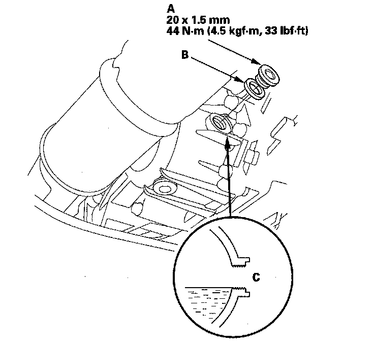

Fluid - Transfer Case: Service and Repair
Transfer Assembly Fluid Replacement1. Bring the transmission up to normal operating temperature (the radiator fan comes on).
2. Park the vehicle on level ground, and turn the engine off.
3. Raise the vehicle up on a lift, or apply the parking brake, block both rear wheels, and raise the front of the vehicle. Make sure it is securely supported.
4. Remove the transmission undercover.
5. Remove the drain plug (A) and drain the transfer fluid (hypoid gear oil).
6. Reinstall the drain plug with a new sealing washer (B).
7. Remove the filler plug (A) and sealing washer (B).

8. Refill the transfer assembly with the recommended fluid (hypoid gear oil) through the filler hole (C) until the fluid flows out. Use an SAE 90 or SAE 80W-90 viscosity hypoid gear oil, API classified GL4 or GL5 only.
Viscosity:
SAE 90: Above 0°F (-18°C)
SAE 80W-90: Below 0°F (-18°C)
Transfer Fluid (Hypoid Gear Oil) Capacity:
0.43 L (0.45 US qt) at fluid change
9. Install the filler plug with a new sealing washer.
10. Install the transmission undercover.